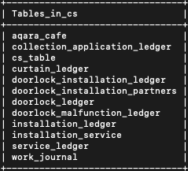
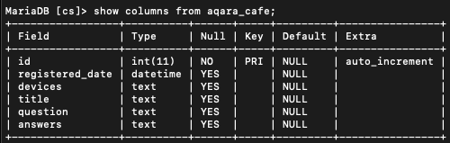
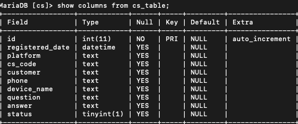
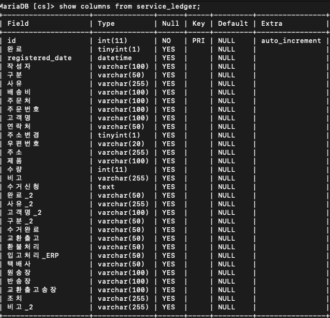
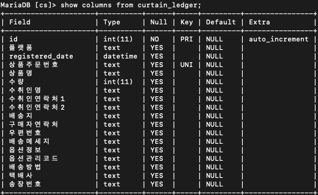
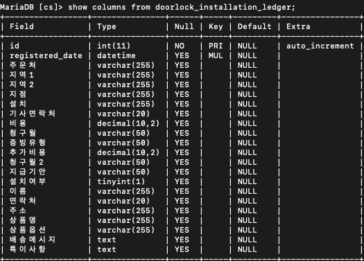
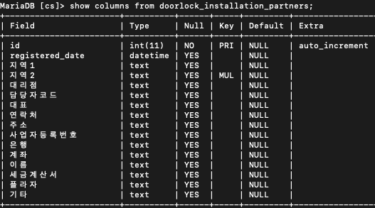
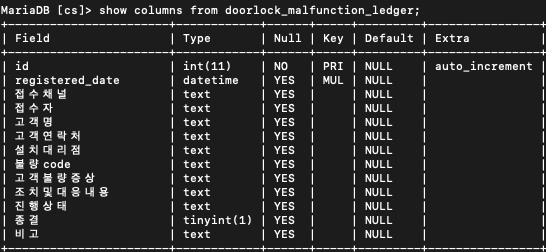
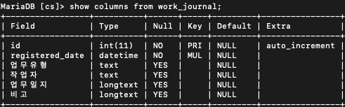

5 Database - MySQL
5.1 개요
CS 작업 관련 모든 구글시트, 아카라 카페, 기술지원 내역을 MySQL DB에 데이터 베이스화 하였다.
5.2 DB Schema
Database: cs

5.2.1 아카라 카페

5.2.2 기술 CS 업무

5.2.3 수거 신청 대장

5.2.4 커튼/블라인드 설치

5.2.5 도어락 설치기사 배정

5.2.6 도어락 설치 파트너

5.2.7 도어락 불량 대장

5.2.8 업무일지

5.3 MySQL 테이블 생성 방법
도어락 설치 기사 배정 테이블 예제
#CREATE TABLE doorlock_installation_ledger (
# id INT AUTO_INCREMENT PRIMARY KEY,
# registered_date DATETIME,
# 주문처 VARCHAR(255),
# 지역1 VARCHAR(255),
# 지역2 VARCHAR(255),
# 지점 VARCHAR(255),
# 설치 VARCHAR(255),
# 기사연락처 VARCHAR(20),
# 비용 DECIMAL(10, 2),
# 청구월 VARCHAR(50),
# 증빙유형 VARCHAR(50),
# 추가비용 DECIMAL(10, 2),
# 청구월2 VARCHAR(50),
# 지급기안 VARCHAR(50),
# 설치여부 BOOLEAN,
# 이름 VARCHAR(255),
# 연락처 VARCHAR(20),
# 주소 VARCHAR(255),
# 상품명 VARCHAR(255),
# 상품옵션 VARCHAR(255),
# 배송메시지 TEXT,
# 특이사항 TEXT,
# UNIQUE KEY unique_record (registered_date, 연락처,주소)
#) ENGINE=InnoDB DEFAULT CHARSET=utf8mb4 COLLATE=utf8mb4_general_ci;- Unique Key 설정: 위 예제에서 보며 registered_date, 연락처와 주소 3개의 칼럼이 같을 경우는 새로운 row를 추가하지 않고 업데이트하도록 unique key를 설정합니다.
5.4 코드 분석
5.4.1 MySQL DB 연결
#conn = mysql.connector.connect(
# user=os.getenv('SQL_USER'),
# password=os.getenv('SQL_PASSWORD'),
# host=os.getenv('SQL_HOST'),
# database=os.getenv('SQL_DATABASE'),
# charset='utf8mb4',
# collation='utf8mb4_general_ci'
#)
- 환경 변수에서 가져온 자격 증명으로 MySQL 데이터베이스에 연결을 설정한다. charset과 collation을 UTF-8로 설정해 한국어와 같은 문자를 적절히 처리할 수 있게 한다.
5.4.2 아카라 카페
5.4.2.1 데이터 저장
#def save_to_mysql(self, df):
# """Save DataFrame to MySQL database."""
# try:
# # Connect to MySQL database
# conn = mysql.connector.connect(**self.db_config)
# cursor = conn.cursor()
#
# # Replace NaN with None for MySQL compatibility
# df = df.where(pd.notnull(df), None)
# # Insert data into MySQL, checking for duplicates
# for _, row in df.iterrows():
# # Check if the row already exists
# check_sql = """
# SELECT COUNT(*) FROM aqara_cafe WHERE registered_date = %s AND title = %s
# """
# cursor.execute(check_sql, (row['registered_date'], row['title']))
# result = cursor.fetchone()
#
# if result[0] == 0: # If no existing row found
# insert_sql = """
# INSERT INTO aqara_cafe (registered_date, devices, title, question, answers)
# VALUES (%s, %s, %s, %s, %s)
# """
# cursor.execute(insert_sql, tuple(row))
#
# conn.commit()
# cursor.close()
# conn.close()
# print("Data saved to MySQL successfully!")
# except mysql.connector.Error as err:
# print(f"Error: {err}")save_to_mysql() 함수는 크롤링한 데이터를 MySQL 데이터베이스에 저장하는 역할을 한다.
NaN처리: df.where(pd.notnull(df), None): MySQL에서는 NaN 값을 NULL로 처리해야 합니다. 이 부분에서 DataFrame의 NaN 값을 MySQL에 호환되는 None으로 변환합니다.
5.4.2.2 중복 데이터 확인및 처리
SELECT COUNT(*) FROM aqara_cafe WHERE registered_date = %s AND title = %s이 쿼리는 테이블에서 등록된 날짜와 제목이 같은 데이터를 확인하는 쿼리입니다. 이를 통해 중복된 데이터가 있는지 확인한다.
cursor.execute(check_sql, (row[‘registered_date’], row[‘title’])): row[‘registered_date’]와 row[‘title’] 값을 사용하여 중복 여부를 검사한다.
5.4.2.3 데이터 삽입
#INSERT INTO aqara_cafe (registered_date, devices, title, question, answers)
#VALUES (%s, %s, %s, %s, %s)이 쿼리는 MySQL 테이블 aqara_cafe에 데이터를 삽입하는 SQL 문이다. 각 행의 데이터를 테이블에 삽입한다.
cursor.execute(insert_sql, tuple(row)): 각 행의 데이터를 SQL 쿼리의 %s 자리에 삽입해 MySQL에 추가한다.
5.4.3
수거 신청 대장
5.4.3.1 기존 데이터 유무 확인
#check_query = """
#SELECT COUNT(*) FROM service_ledger
#WHERE registered_date = %s AND 고객명 = %s AND 주문번호 = %s AND 제품 = %s
#"""
#cursor.execute(check_query, (row['registered_date'], row['고객명'], row['주문번호'], row['제품']))
#result = cursor.fetchone()동일한 registered_date, 고객명, 주문번호, 그리고 제품을 가진 레코드가 이미 존재하는지 확인한다.
cursor.execute()로 쿼리를 실행하고, cursor.fetchone()으로 결과를 가져온다.
5.4.3.2 업데이트 로직
#if result[0] > 0:
# update_query = """
# UPDATE service_ledger
# SET 완료 = %s, 작성자 = %s, 구분 = %s, 사유 = %s, 배송비 = %s, ...
# WHERE registered_date = %s AND 고객명 = %s AND 주문번호 = %s AND 제품 = %s
# """
# cursor.execute(update_query, ...)
#else:
# insert_query = """
# INSERT INTO service_ledger (완료, registered_date, 작성자, 구분, 사유, ...)
# VALUES (%s, %s, %s, %s, ...)
# """
# cursor.execute(insert_query, ...)업데이트 로직: 만약 동일한 레코드가 존재하면, 기존의 레코드를 UPDATE 쿼리를 사용해 업데이트합니다.
삽입 로직: 동일한 레코드가 존재하지 않으면, 새로운 레코드를 INSERT 쿼리를 사용해 삽입합니다.
5.4.4 설치 기사 배정
5.4.4.1 데이터 삽입 및 업데이트 쿼리
#for index, row in df.iterrows():
# if row['주문번호'] and pd.notna(row['주문번호']):
# sql = """
# INSERT INTO installation_ledger
# (registered_date, 출고날짜, 고객명, 연락처, 주문번호, 주소, 구매품목,
# 도어락, 도어벨, 조명스위치, 커튼, 내용확인, 기사님성함, 해피콜예정일,
# 설치예정일, 설치완료여부, 유상, 비고_아카라, 비고_피엘)
# VALUES (%s, %s, %s, %s, %s, %s, %s, %s, %s, %s, %s, %s, %s, %s, %s, %s, %s, %s, #%s)
# ON DUPLICATE KEY UPDATE
# registered_date = VALUES(registered_date),
# 출고날짜 = VALUES(출고날짜),
# 고객명 = VALUES(고객명),
# 연락처 = VALUES(연락처),
# 주소 = VALUES(주소),
# 구매품목 = VALUES(구매품목),
# 도어락 = VALUES(도어락),
# 도어벨 = VALUES(도어벨),
# 조명스위치 = VALUES(조명스위치),
# 커튼 = VALUES(커튼),
# 내용확인 = VALUES(내용확인),
# 기사님성함 = VALUES(기사님성함),
# 해피콜예정일 = VALUES(해피콜예정일),
# 설치예정일 = VALUES(설치예정일),
# 설치완료여부 = VALUES(설치완료여부),
# 유상 = VALUES(유상),
# 비고_아카라 = VALUES(비고_아카라),
# 비고_피엘 = VALUES(비고_피엘)
# """
# values = (
# row['registered_date'], row['출고날짜'], row['고객명'], row['연락처'], #row['주문번호'], row['주소'], row['구매품목'],
# row['도어락'], row['도어벨'], row['조명스위치'], row['커튼'], row['내용확인'], #row['기사님성함'], row['해피콜예정일'],
# row['설치예정일'], row['설치완료여부'], row['유상'], row['비고_아카라'], #row['비고_피엘']
# )
#
# cursor.execute(sql, values)df.iterrows()를 사용해 DataFrame의 각 행을 순회하며, 주문번호가 존재하는 경우에만 MySQL에 데이터를 삽입 또는 업데이트합니다.
쿼리 설명:
INSERT INTO installation_ledger: 데이터를 삽입하는 SQL 쿼리입니다.
ON DUPLICATE KEY UPDATE: 만약 중복된 키(예: 주문번호)가 있으면 기존 데이터를 업데이트합니다.
VALUES(): 각 행의 데이터를 SQL 쿼리로 전달합니다.
5.4.5 커튼/블라인드 설치
#insert_query = """
# INSERT INTO curtain_ledger
# (registered_date, 플랫폼, 상품주문번호, 상품명, 수량, 수취인명, 수취인연락처1,
# 수취인연락처2, 배송지, 구매자연락처, 우편번호, 배송메세지, 옵션정보,
# 옵션관리코드, 배송방법, 택배사, 송장번호)
# VALUES (%s, %s, %s, %s, %s, %s, %s, %s, %s, %s, %s, %s, %s, %s, %s, %s, %s)
# ON DUPLICATE KEY UPDATE
# registered_date = VALUES(registered_date),
# 플랫폼 = VALUES(플랫폼),
# 상품명 = VALUES(상품명),
# 수량 = VALUES(수량),
# 수취인명 = VALUES(수취인명),
# 수취인연락처1 = VALUES(수취인연락처1),
# 수취인연락처2 = VALUES(수취인연락처2),
# 배송지 = VALUES(배송지),
# 구매자연락처 = VALUES(구매자연락처),
# 우편번호 = VALUES(우편번호),
# 배송메세지 = VALUES(배송메세지),
# 옵션정보 = VALUES(옵션정보),
# 옵션관리코드 = VALUES(옵션관리코드),
# 배송방법 = VALUES(배송방법),
# 택배사 = VALUES(택배사),
# 송장번호 = VALUES(송장번호)
#"""- SQL 쿼리: INSERT INTO 구문을 사용하여 데이터를 삽입합니다. 동시에 ON DUPLICATE KEY UPDATE를 사용하여 중복된 키가 있을 경우 기존 데이터를 업데이트합니다.
5.4.5.1 트랜잭션 재시도 및 커밋
#retry_count = 3
#for index, row in df.iterrows():
# # 수량이 빈 값이거나 숫자로 변환할 수 없으면 0으로 처리
# try:
# quantity = int(row['수량']) if row['수량'].strip() else 0
# except ValueError:
# quantity = 0
#
# values = (row['registered_date'], row['플랫폼'], row['상품주문번호'], row['상품명'], #uantity, ...)
#
# for attempt in range(retry_count):
# try:
# cursor.execute(insert_query, values)
# break # 성공 시 루프 탈출
# except mysql.connector.Error as err:
# if err.errno == 1205: # Lock wait timeout
# st.write(f"Lock wait timeout, 재시도 중: {attempt + 1}")
# time.sleep(2) # 잠시 대기 후 재시도
# else:
# raise # 다른 오류 발생 시
#
#cursor.close()
#conn.close()재시도 로직: MySQL에서 트랜잭션이 실패할 경우(예: 잠금 대기 시간 초과) 최대 3번까지 재시도합니다.
트랜잭션 처리: 각 데이터 행을 MySQL에 삽입 또는 업데이트합니다.
5.4.6 도어락 설치 기사 배정
5.4.6.1 데이터 삽입 또는 업데이트 쿼리
#query = """
#INSERT INTO doorlock_installation_ledger (
# registered_date, 주문처, 지역1, 지역2, 지점, 설치, 기사연락처, 비용, 청구월, 증빙유형, #추가비용, 청구월2, 지급기안, 설치여부, 이름, 연락처, 주소, 상품명, 상품옵션, 배송메시지, #특이사항
#) VALUES (%s, %s, %s, %s, %s, %s, %s, %s, %s, %s, %s, %s, %s, %s, %s, %s, %s, %s, %s, %s)
#ON DUPLICATE KEY UPDATE
# 주문처 = VALUES(주문처),
# 지역1 = VALUES(지역1),
# 지역2 = VALUES(지역2),
# 지점 = VALUES(지점),
# 설치 = VALUES(설치),
# 기사연락처 = VALUES(기사연락처),
# 비용 = VALUES(비용),
# 청구월 = VALUES(청구월),
# 증빙유형 = VALUES(증빙유형),
# 추가비용 = VALUES(추가비용),
# 청구월2 = VALUES(청구월2),
# 지급기안 = VALUES(지급기안),
# 설치여부 = VALUES(설치여부),
# 이름 = VALUES(이름),
# 상품명 = VALUES(상품명),
# 상품옵션 = VALUES(상품옵션),
# 배송메시지 = VALUES(배송메시지),
# 특이사항 = VALUES(특이사항)
#"""- SQL 쿼리: INSERT INTO 구문을 사용하여 데이터를 삽입하고, 중복 키가 발생할 경우 기존 데이터를 업데이트하는 ON DUPLICATE KEY UPDATE 구문을 사용합니다.
5.4.6.2 데이터 삽입 또는 업데이트 처리
#def insert_or_update_data(df):
# try:
# for index, row in df.iterrows():
# values = [
# row['registered_date'].strftime('%Y-%m-%d %H:%M:%S') if #row['registered_date'] else None,
# row['주문처'], row['지역1'], row['지역2'], row['지점'], row['설치'], #row['기사연락처'],
# clean_cost_value(row['비용']), row['청구월'], row['증빙유형'], #clean_cost_value(row['추가비용']),
# row['청구월2'], row['지급기안'], 1 if row['설치여부'] == 'TRUE' else 0,
# row['이름'], row['연락처'], row['주소'], row['상품명'], row['상품옵션'], #row['배송메시지'], row['특이사항']
# ]
# cursor.execute(query, values)
# conn.commit()
# st.write("데이터가 성공적으로 MySQL에 저장되었거나 업데이트되었습니다.")
# except Error as e:
# st.write(f"Error while connecting to MySQL: {e}")
# finally:
# cursor.close()
# conn.close()- 데이터 삽입/업데이트: 각 데이터 행을 INSERT INTO 쿼리를 통해 MySQL에 삽입하거나 업데이트한다.
5.4.7 도어락 설치 파트너
5.4.7.1 데이터 삽입 및 업데이트 쿼리
#query = """
#INSERT INTO doorlock_installation_partners (
# registered_date, 지역1, 지역2, 대리점, 담당자코드, 대표, 연락처, 주소,
# 사업자등록번호, 은행, 계좌, 이름, 세금계산서, 플라자, 기타
#) VALUES (
# %s, %s, %s, %s, %s, %s, %s, %s, %s, %s, %s, %s, %s, %s, %s
#) ON DUPLICATE KEY UPDATE
# 지역1 = VALUES(지역1),
# 담당자코드 = VALUES(담당자코드),
# 대표 = VALUES(대표),
# 연락처 = VALUES(연락처),
# 사업자등록번호 = VALUES(사업자등록번호),
# 은행 = VALUES(은행),
# 계좌 = VALUES(계좌),
# 이름 = VALUES(이름),
# 세금계산서 = VALUES(세금계산서),
# 플라자 = VALUES(플라자),
# 기타 = VALUES(기타);
#""
#
#def insert_or_update_data(df):
# try:
# for index, row in df.iterrows():
# values = [
# row['registered_date'].strftime('%Y-%m-%d %H:%M:%S') if #row['registered_date'] else None,
# row['지역1'], row['지역2'], row['대리점'], row['담당자코드'], row['대표'], #row['연락처'],
# row['주소'], row['사업자등록번호'], row['은행'], row['계좌'], row['소유자명'],row['세금계산서'], row['플라자'], row['기타']
# ]
# cursor.execute(query, values)
# conn.commit()
# st.write("데이터가 성공적으로 MySQL에 저장되었거나 업데이트되었습니다.")
# except Error as e:
# st.write(f"Error while connecting to MySQL: {e}")
# finally:
# cursor.close()
# conn.close()INSERT INTO 및 ON DUPLICATE KEY UPDATE: 데이터베이스에 데이터를 삽입할 때, 만약 기존에 동일한 키(예: 연락처)가 존재하면 해당 데이터를 업데이트한다. 그렇지 않으면 새로운 데이터를 삽입한다.
데이터 삽입: 각 행의 데이터를 SQL 쿼리에 맞춰 준비하고, 반복문을 통해 각 행의 데이터를 MySQL 테이블에 삽입하거나 업데이트한다.
트랜잭션 커밋: conn.commit()을 통해 데이터베이스에 변경 사항을 커밋하여 저장한다.
5.4.8 도어락 불량 대장
5.4.8.1 데이터 삽입 및 업데이트 쿼리
#query = """
#INSERT INTO doorlock_malfunction_ledger (registered_date, ..., 비고)
#VALUES (%s, %s, ..., %s)
#ON DUPLICATE KEY UPDATE 접수채널 = VALUES(접수채널), ..., 비고 = VALUES(비고);
#"""- INSERT INTO … ON DUPLICATE KEY UPDATE 구문을 사용하여, 동일한 고객명과 고객연락처에 해당하는 데이터가 이미 존재할 경우, 기존 데이터를 업데이트하고, 없으면 새 데이터를 삽입한다.
#for index, row in df.iterrows():
# values = [
# row['registered_date'].strftime('%Y-%m-%d %H:%M:%S') if row['registered_date'] else #None,
# ...
# ]
# cursor.execute(query, values)
#conn.commit()- 데이터프레임의 각 행에 대해 쿼리를 실행하여, MySQL에 데이터를 삽입하거나 업데이트한다.
5.4.9 업무일지
5.4.9.1 주요기능
데이터 업데이트: 동일한 날짜와 업무 유형의 데이터가 있을 경우, 기존 데이터를 업데이트하고 없으면 새로 추가한다.
데이터 조회 및 자동 입력: 기존 데이터를 조회하여 폼에 미리 입력해 사용자 경험을 개선한다.
5.4.9.2 MySQL 데이터 검색
#cursor.execute("""
# SELECT 업무유형, 작업자, 업무일지, 비고
# FROM work_journal
# WHERE DATE(registered_date) = %s AND 업무유형 = %s
#""", (registered_date_for_query, task_type))
#existing_data = cursor.fetchone()- 데이터베이스에서 선택된 날짜와 업무 유형에 해당하는 기존 데이터를 조회하여 있으면 폼에 자동으로 채운다.
5.4.9.3 MySQL 데이터 저장
#cursor.execute("""
# INSERT INTO work_journal (registered_date, 업무유형, 작업자, 업무일지, 비고)
# VALUES (%s, %s, %s, %s, %s)
#""", (registered_date_for_db, task_type, worker, work_journal, note))- MySQL에도 동일한 방식으로 데이터를 삽입하거나 업데이트한다.